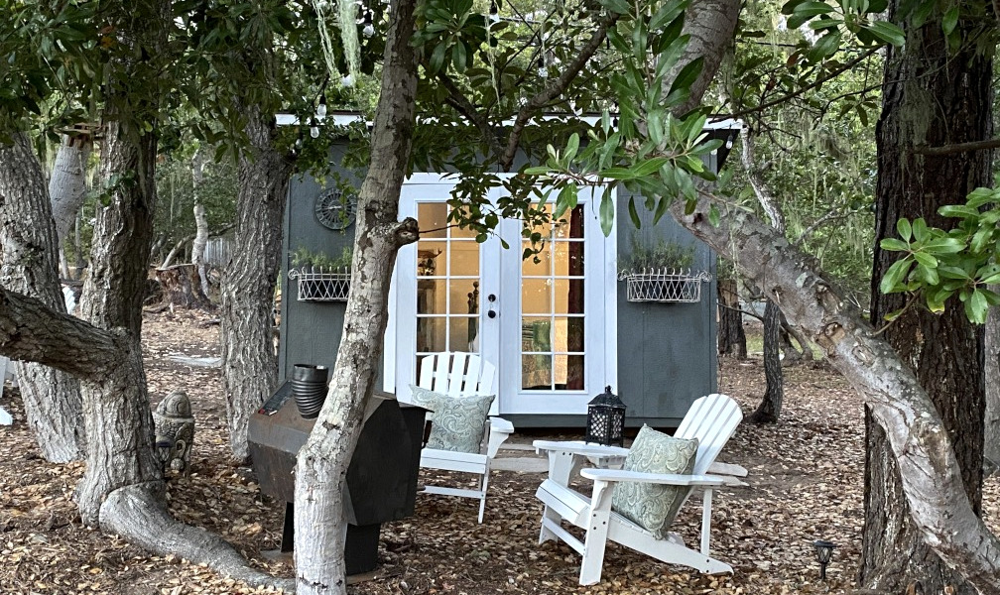

Welcome!
Are you ready to add beauty to your indoor / outdoor living space? You've come to the right place!

Joanne's Custom Design Service
Jo approaches every project with care and meticulous detail. She will learn your personal style so that your vision may come to life!
- She is ready to design any room, yard, or patio according to your needs.
- She specializes in constructing custom-built features & sheds.
- If you are interested in garden-greenery, foliage, or flowers of any kind, you're in luck—Jo is a knowledgable gardener.
- The end-product will be a custom-designed place of enjoyment!
Does your front yard need appeal? Does your back yard need an upgrade? Are you interested in custom home-like sheds? Need an expert to add to your interior? Then let Jo transform that for you!